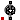

| Name | Description |
|---|---|
| Parameter record for friction losses | |
| Parameter record for brush losses | |
| Parameter record for stray load losses | |
| Parameter record for core losses | |
| Parameter record for permanent magnet losses | |
|  Friction | Model of angular velocity dependent friction losses |
| Loss models for induction machines | |
| Loss models for DC machines |
 Modelica.Electrical.Machines.Losses.FrictionParameters
Modelica.Electrical.Machines.Losses.FrictionParametersParameter record for Friction losses.
Extends from Modelica.Icons.Record (Icon for records).
| Name | Description |
|---|---|
| PRef | Reference friction losses at wRef [W] |
| wRef | Reference angular velocity that the PRef refer to [rad/s] |
| power_w | Exponent of friction torque w.r.t. angular velocity |
Modelica.Electrical.Machines.Losses.BrushParametersParameter record for three-phase Brush and DC Brush losses.
Extends from Modelica.Icons.Record (Icon for records).
| Name | Description |
|---|---|
| V | Total voltage drop of brushes for currents > ILinear [V] |
| ILinear | Current indicating linear voltage region of brush voltage drop [A] |
Modelica.Electrical.Machines.Losses.StrayLoadParametersParameter record for three-phase and DC stray load losses.
Extends from Modelica.Icons.Record (Icon for records).
| Name | Description |
|---|---|
| PRef | Reference stray load losses at IRef and wRef [W] |
| IRef | Reference RMS current that PRef refers to [A] |
| wRef | Reference angular velocity that PRef refers to [rad/s] |
| power_w | Exponent of stray load loss torque w.r.t. angular velocity |
Modelica.Electrical.Machines.Losses.CoreParametersParameter record for core losses of induction machines and core losses of DC machines.
Extends from Modelica.Icons.Record (Icon for records).
| Name | Description |
|---|---|
| m | Number of phases (1 for DC, 3 for induction machines) |
| PRef | Reference core losses at reference inner voltage VRef [W] |
| VRef | Reference inner RMS voltage that reference core losses PRef refer to [V] |
| wRef | Reference angular velocity that reference core losses PRef refer to [rad/s] |
Modelica.Electrical.Machines.Losses.PermanentMagnetLossParametersParameter record for permanent magnet losses.
Extends from Modelica.Icons.Record (Icon for records).
| Name | Description |
|---|---|
| PRef | Reference permanent magnet losses at IRef and wRef [W] |
| c | Part of permanent magnet losses at current = 0, i.e. independent of current |
| IRef | Reference stator RMS current that PRef refers to [A] |
| power_I | Exponent of permanent magnet loss torque w.r.t. stator current |
| wRef | Reference angular velocity that PRef refers to [rad/s] |
| power_w | Exponent of permanent magnet loss torque w.r.t. angular velocity |
The friction losses are considered by the equations
tau / tauRef = (+w / wRef) ^ power_w for w > +wLinear - tau / tauRef = (-w / wRef) ^ power_w for w < -wLinear
with
tauRef * wRef = PRef
being the friction torque at the reference angular velocity
wRef. The exponent power_w is
approximately 1.5 for axial ventilation and approximately 2.0 for radial ventilation.
For stability reasons the friction torque tau is approximated by a linear curve
tau / tauLinear = w / wLinear
with
tauLinear = tauRef*(wLinear/wRef) ^ power_w
in the range -wLinear ≤ w ≤ wLinear with wLinear = 0.001 * wRef. The relationship of torque
and angular velocity is depicted in Fig. 1
 |
Fig. 1: Friction loss torque versus angular velocity for power_w = 2 |
If it is desired to neglect friction losses, set frictionParameters.PRef = 0 (this is the default).
| Name | Description |
|---|---|
| frictionParameters | Friction loss parameters |
| useHeatPort | =true, if heatPort is enabled |
| Name | Description |
|---|---|
| flange | Shaft end |
| support | Housing and support |
| heatPort | Optional port to which dissipated losses are transported in form of heat |